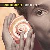

Celtic Lyrics Corner > Artists & Groups > Mouth Music > Shorelife > Move On
|  | Move On |
| Credits : | Jackie Joyce & Martin Swan |
| Appears On : | Shorelife |
| Language : | English |
Lyrics :
We're moving on in life...
Spirit, come be with me, see with mine eyes
Spirit, come walk with me, be my disguise
Spirit, some speak with me words I would know
Spirit, come move with me where'er I go
And move on, we're moving on in life...
Spirit, come roam with me, restless this heart
Spirit, come stay with me, never we'll part
Spirit, come spin with me, dance if you dare
Spirit, come move with me where'er I fare
And move on, we're moving on in life...
Spirit, come be with me, be with me, be with me
Spirit, come walk with me, walk with me, walk with me
Spirit, some speak with me, speak with me, speak with me
Spirit, come move with me, move with me, move with me...
And move on, we're moving on in life...